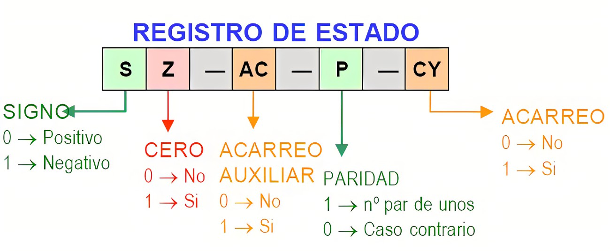

2.2.2 Registros de Control y de Estados
Se utilizan para controlar las operaciones del procesador: la mayor parte de estos registros no son visibles al usuario y algunos pueden ser accesibles a las instrucciones de maquina ejecutadas en un modo de control. Los registros utilizados son los siguientes:
Registro de direcciones de memoria (MAR): el cual contiene la dirección en donde se efectuará la próxima lectura o escritura de datos. El numero de direcciones depende del tama√±o de la MAR.
Registro de datos de memoria (MBR): contiene los datos que van a ser escritos en la memoria o los que fueron leídos en ella.
Registro de direcciones de entrada y salida (I/O AR): especifica al dispositivo ya sea de entrada o salida.
Registro de datos de entrada y salida (I/O BR): es una área temporal en donde se lleva a cabo el intercambio de datos entre el procesador y el dispositivo de entrada y salida que esta especificado en IOAR.
Registro de instrucciones (IR): contiene la dirección de la siguiente instrucción que se va a ejecutar.
Palabras de estado del programa (PSW): contiene códigos de condición junto con otras informaciones de estado como el signo, acarro, desbordamiento, entre otras.
